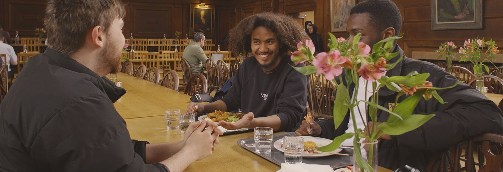
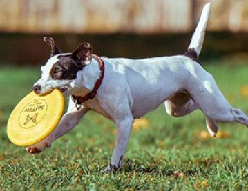
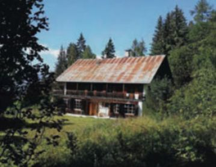

ADMISSIONS
Undergraduate
Graduate
Continuing education
RESEARCH
Divisions
Research impact
Libraries
Innovation and Partnership
Support for researchers
Research in conversation
Public engagement with research
NEWS & EVENTS
Events
Features
Oxford profiles
Oxford and coronavirus
Ukraine
News releases for journalists
Filming in Oxford
Find An Expert
ABOUT
Organization
Facts and figures
Oxford people
Oxford Access
International Oxford
Building our future
Jobs
牛津大学

OXFORD'S ASTROPHORIA Foundation Year Programme FOR UNDERREPRESENTED STUDENTS
The fully-funded year will offer places for up to 50 students via UCAS for entry in 2023
DISCOVER
 